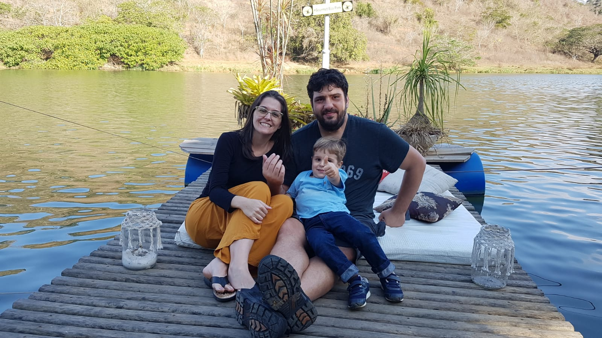

Pedro Rezende Marconi Val
Portfólio em constante atualização do desenvolvedor em treinamento pela Trybe! #vqv

Uma foto com minha família.
Me chamo Pedro, tenho um filho chamado Inácio e minha esposa se chama Jô, estou atualmente trocando de carreira em nome deles. Sou brasileiro, do estado do Rio de Janeiro e da cidade de Pádua!
Embora esteja começando o treinamento, tenho algumas caracteristicas as quais me orgulho muito.
- Paciência
Paciência significa ter autodomínio quando não se pode controlar a maneira de agir das pessoas ou quando as coisas não saem como se quer. Ser paciente é ser sereno e tolerante frente às dificuldades.
Ter paciência significa esperar, suportar incômodos sem alterar o próprio humor. Em muitas situações, é a capacidade ideal para se fazer trabalhos minuciosos e demorados. Também pode ser encarada como uma forma de vida na qual a serenidade e o autocontrole têm primazia.
pessoa paciente tende a desenvolver a habilidade de ver com mais clareza a origem dos problemas e a melhor maneira de solucioná-los, mesmo que a solução só venha com o passar do tempo. O paciente sabe encarar a vida de maneira otimista, tranquila, buscando sempre a harmonia. A paciência é característica típica da personalidade madura.
- Fácil sociabilidade
Todos nós somos sociáveis e é disso que se trata a sociabilidade, a forma natural com que agimos durante a nossa vida, conhecendo novas pessoas e interagindo, cada um com o seu modo de viver em sociedade.
Alguns encontrando mais facilidade de estar ao redor de pessoas ou até mesmo públicos e outros sentindo mais dificuldades. No final, todos acabam socializando da forma que mais traz conforto.
Nós, seres humanos, somos sociáveis por natureza e estamos naturalmente ligados à esta capacidade, basicamente não conseguimos ficar sozinhos pois fomos criados culturalmente desta forma, desde os primórdios, quando o ser humano descobriu que viver em sociedade era melhor para o seu desenvolvimento natural, pois, como todo animal, estar em sociedade nos tornava mais forte e nos trazia mais segurança.
Com o passar dos anos, essa característica que possuímos foi sendo desenvolvida e adaptada, já não estamos mais socializando apenas para fins de proteção, sentimos uma necessidade de conforto pessoal. Por isso precisamos pensar naqueles que não conseguem desenvolver esta capacidade de forma tão natural, mas que precisam tanto quanto nós.
Muita vontade de aprender
Há uma grande diferença entre um funcionário que tem conhecimento e um trabalho que fornece conhecimento. Essa relação foi incorporada por Peter Drucker em 1959, e, durante os últimos anos, as pessoas têm falado muito sobre este assunto.
Com a era digital, é difícil encontrar alguém que não consiga aprender algo através de uma pesquisa no Google, ou um vídeo no Youtube, por exemplo. Ou seja, nunca foi tão fácil aprender sobre qualquer coisa. A informação está disponível e é possível pesquisar quando desejar.
Nos dias atuais, o conhecimento pode ser considerado até uma mercadoria. Para ser o funcionário mais “qualificado” de uma empresa, tudo o que você precisa fazer é ter acesso a internet.Se é tão fácil assim, o que é, então, importante para ser um profissional bem sucedido? Qual tipo de trabalhador as empresas precisam? A resposta é “trabalhadores da aprendizagem”.
Como já falamos, o conhecimento está ao nosso alcance de forma cada vez mais rápida e fácil. Então, não há desculpas para não aprender sobre algum assunto, certo?
O diferencial desses profissionais é que eles são capazes de aprender a aprender, e, especialmente, absorver coisas novas, e utilizar e aplicar esse conhecimento em diferentes cenários e ambientes. Ou seja, isso com certeza é mais valioso do que ter muito conhecimento que acaba não sendo utilizado.
E isso é o que muitas empresas estão buscando nos dias atuais: profissionais interessados, que se dedicam e desejam aprender cada vez mais. Esse tipo de profissional faz a diferença e se destaca num mercado tão concorrido.- Inglês Fluente
Listo como principais motivos para que um profissional de TI precise dominar o inglês são:
Manuais e documentação oficial: os maiores softwares e aplicações lançam a sua documentação oficial em inglês. Até surgir a versão traduzida, já se passou algum tempo. Assim, o profissional que dominar este idioma poderá sempre estar um passo à frente;
Palestras e congressos internacionais: todas as subáreas de tecnologia investem em uma série de congressos e workshops (presenciais ou online) para a disseminação de novas ideias, sendo que o inglês acaba sendo o idioma oficial.
Oportunidades internacionais: quem deseja uma carreira internacional, não tem como fugir do domínio do inglês. Até para trabalhar em médias ou grandes empresas aqui no Brasil, a fluência em inglês acaba sendo um dos pré-requisitos.
- Experiencia em tecnologia em geral
- Experiencia em Hardware
Atualmente aluno Trybe em formação com o seguinte Currículo.
Para meus orgulhos!